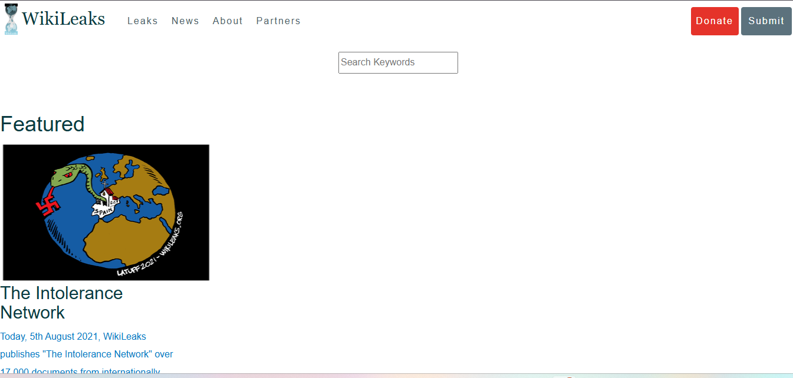
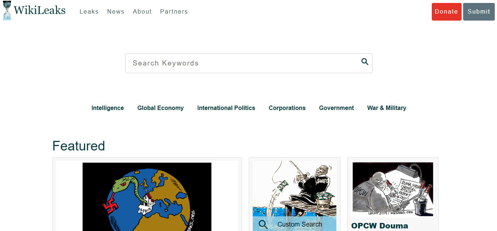

Versión 1
Se empezó agregando todos los datos principales para recordar cada aspecto que se debe tomar en cuenta para replicar la página

Versión 2
Se empezó a hacer uso de css para el diseño y se completó el header con botones funcionales y estilo css

Versión 3
Se terminó de agregar el contenido y se le dio un diseño más parecido al original, con colores, fuentes y estilos similares, solo falta agregar el footer
